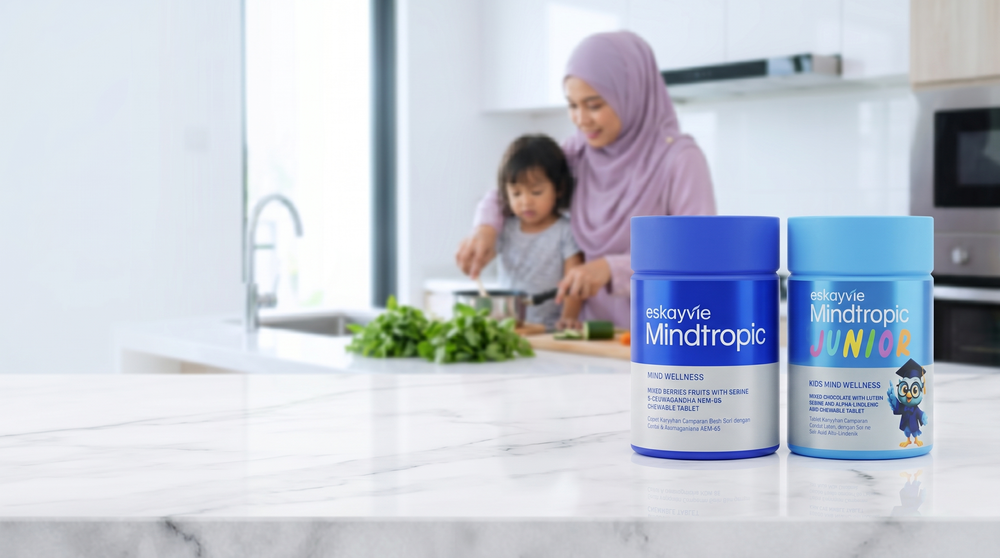
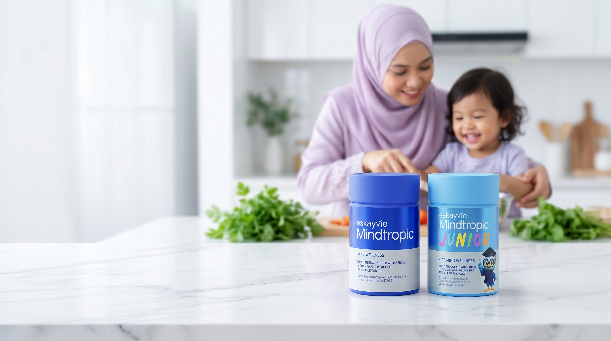

Both: two bottles sharp on a clean marble table (no front edge), family cooking soft and further back, locked camera. Once you choose, I animate that one.

Option A
Bottles grouped to the right, family smaller and off to the side. Most open space on the left for the headline.

Option B
Bottles centred, family larger, closer and more engaged (child laughing). Warmer, and the animation will read more clearly. Slightly less left space.